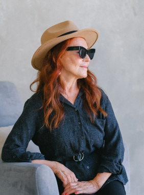
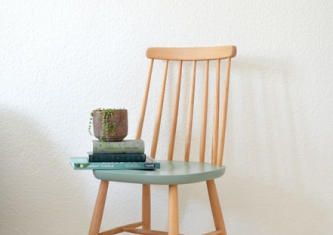

Что еще можно делать с тревогой?
- Управлять ей через что-то внешнее: включать
музыку, которая
создает
другое настроение, сесть
за
работу с цифрами, которая быстренько активизирует другие участки мозга, читать
блоги,
которые
вас
успокаивают и отвлекают.
- А еще порой можно разрешить себе тревогу
заесть чем-то вкусным.
Это,
конечно, не самая
здоровая
стратегия, но в ряде ситуаций можно считать ее вполне рабочей. Особенно, когда
внутренний
ресурс
на
нуле, а поддерживающее окружение не в доступе.
Онтогенез речи отражает групповой
эриксоновский гипноз.
Чем шире доступный вам репертуар реакций и чем более осознанно вы можете выбирать из него
то,
что лучше всего подойдет в каждой конкретной ситуации, тем больше будет ваша устойчивость к
стрессу, депрессии, неопределенности, да и к жизни в целом.
Мы знаем, что нуждаться в помощи и поддержке в
трудные периоды жизни абсолютно нормально
для
любого человека, и стремимся сделать психотерапию безопасной, удобной и доступной
каждому
Одна из ключевых задач психотерапии как раз и заключается в том, чтобы этот репертуар
расширять
и обучать человека пользоваться доступными ему реакциями в той последовательности,
пропорции
и
объеме, которые подходят именно ему. Без оглядки на то, "как правильно" или "как у
других".

Чем шире доступный вам репертуар реакций и чем более осознанно вы можете выбирать из
него
то,
что лучше всего подойдет в каждой конкретной ситуации, тем больше будет ваша
устойчивость к
стрессу, депрессии, неопределенности, да и к жизни в целом.
А еще порой можно разрешить себе тревогу заесть чем-то вкусным.
Чем шире доступный вам репертуар реакций и чем более
осознанно вы
можете
выбирать из него то,
что лучше всего подойдет в каждой конкретной ситуации, тем больше будет ваша
устойчивость к
стрессу, депрессии, неопределенности, да и к жизни в целом.
Упражнение #1
Нужно последовательно напрягать и расслаблять
каждую мышцу в
теле
на
несколько секунд.
Напрягать стоит довольно сильно, чтобы потом отчетливее ощущать расслабляющий
эффект.
Начать
можно с пальцев ног и постепенно подниматься вверх. Смысл в том, чтобы через
напряжение
дать
стрессу выход, а затем вновь привести себя в спокойное состояние через расслабление
Что еще можно делать с
тревогой?
-
Управлять ей через что-то внешнее: включать музыку, которая создает
другое настроение, сесть за работу с цифрами, которая быстренько активизирует
другие
участки мозга, читать блоги, которые вас успокаивают и отвлекают.
-
А еще порой можно разрешить себе тревогу заесть чем-то вкусным. Это,
конечно, не самая здоровая стратегия, но в ряде ситуаций можно считать ее вполне
рабочей. Особенно, когда внутренний ресурс на нуле, а поддерживающее окружение
не в
доступе.
Чем шире доступный вам репертуар реакций и чем более осознанно вы можете выбирать из
него
то, что лучше всего подойдет в каждой конкретной ситуации, тем больше будет ваша
устойчивость к стрессу.
Чем шире доступный вам репертуар реакций и чем более осознанно вы можете выбирать из
него
то,
что лучше всего подойдет в каждой конкретной ситуации, тем больше будет ваша
устойчивость к
стрессу, депрессии, неопределенности, да и к жизни в целом.
Упражнение #2
Нужно последовательно напрягать и расслаблять каждую мышцу в теле на
несколько секунд. Напрягать стоит довольно сильно, чтобы потом отчетливее ощущать
расслабляющий эффект. Начать можно с пальцев ног и постепенно подниматься вверх.
Смысл в
том, чтобы через напряжение дать стрессу выход, а затем вновь привести себя в
спокойное
состояние через расслабление

Чем шире доступный вам репертуар реакций и чем более осознанно вы можете
выбирать из
него то, что лучше всего подойдет в каждой конкретной ситуации, тем больше будет
ваша
устойчивость к стрессу, депрессии, неопределенности, да и к жизни в целом.
Чем шире доступный вам репертуар реакций и чем более осознанно вы можете
выбирать из
него то, что лучше всего подойдет в каждой конкретной ситуации, тем больше будет
ваша
устойчивость к стрессу, депрессии, неопределенности, да и к жизни в целом.
Одна из ключевых задач психотерапии как раз и заключается в том, чтобы этот репертуар
расширять
и обучать человека пользоваться доступными ему реакциями в той последовательности,
пропорции
и
объеме, которые подходят именно ему. Без оглядки на то, "как правильно" или "как у
других".
Упражнение #1
Нужно последовательно напрягать и расслаблять каждую мышцу в теле на несколько
секунд.
Напрягать стоит довольно сильно, чтобы потом отчетливее ощущать расслабляющий
эффект.
Начать
можно с пальцев ног и постепенно подниматься вверх. Смысл в том, чтобы через
напряжение
дать
стрессу выход, а затем вновь привести себя в спокойное состояние через расслабление
- Self
- ·
- Самооценка и самопринятие
- ·
- Самооценка и самопринятие
- ·
- Упражнения
- Чувства и эмоции
- ·
- Самооценка и самопринятие
- ·
- Тревога